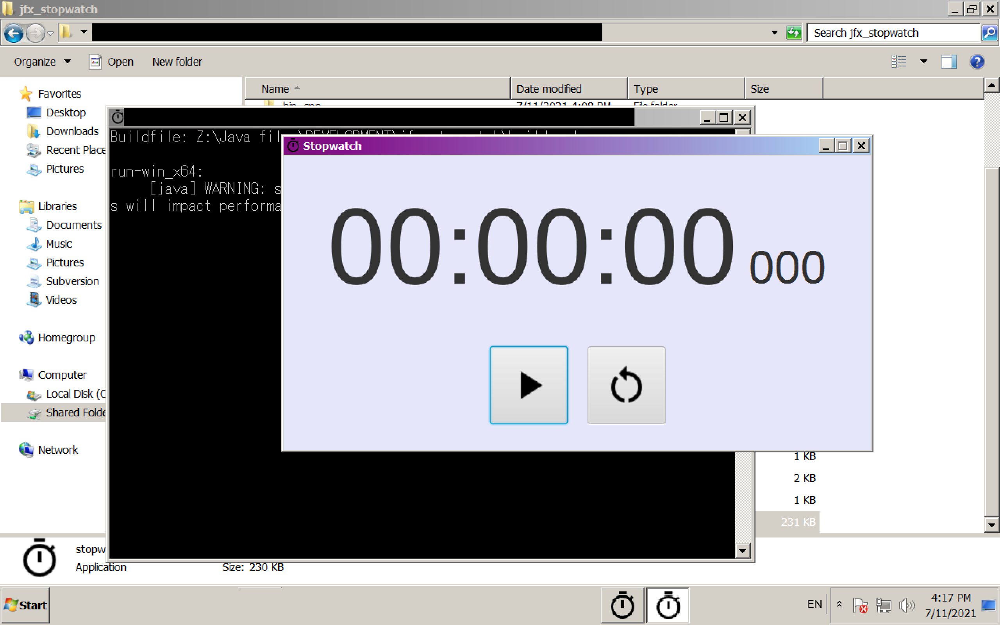

{{ page.title }}
Development Date: May 2021 - May 2021
Development Time:
| Run | Time |
|---|---|
| 1st run | 9hr 32min |
| 2nd run | 1hr 56min |
| 3rd run | 0hr 57min |
| 4th run | 5hr 49min |
| 5th run | 0hr 52min |
| 6th run | 0hr 32min |
Motivation
I want to have a stopwatch application for offline use because I want to know how fast I can develop a well-made program. I have tried to download stopwatch applications from Mac app store but most of them do not work. Therefore, I have decided to write my own stopwatch program.
I have thought about using HTML/CSS/JS to develop the stopwatch program but I usually close my browser tabs by accident. I do not want to close the stopwatch by accident so I chose to use JavaFX to develop my stopwatch application.
Technology
I have used a number of tools to develop my stopwatch program:
| Technology | Usage |
|---|---|
| OpenJDK 11, JavaFX SDK 11.0.2 (x64) | Toolkit to develop desktop GUI application. |
| Apache Ant 1.9.14 | Build tool to pack and run my stopwatch JAR easily. |
| commons-lang-2.6.jar | Internal stopwatch API. |
| log4j-api-2.12.1.jar, log4j-core-2.12.1.jar | Logging |
| g++, make | Help create executable (.exe) for my stopwatch application (Windows x64) |
Screenshots
Windows x64

Mac OS X x64